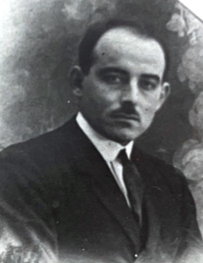

Hall of Fame della Casa del Popolo
In questa pagina sono ricordate tutte le personalità che hanno servito la Casa del Popolo e la comunità di sinistra di Caravaggio, o che hanno dato lustro alla sinistra caravaggina in Italia e nel mondo.
Persone di merito
Emilio Gallavresi (1856-1931)

Figura di spicco del socialismo italiano, deputato del Regno d'Italia per due legislature (1919-1924).
Primo Gibelli (1893-1936)

Originario di Masano, fu il primo straniero ad essere insignito del titolo di "Eroe dell'URSS" dopo aver combattuto nella guerra di Spagna, in cui perse la vita.
Luigi Marchi (1931-1983)

Fu Capogruppo in Consiglio Comunale a Caravaggio, Capogruppo in Consiglio Provinciale e Presidente del Gruppo in Consiglio Regionale per il PCI.
Federico Mezzanotte (1932-2024)

Fu sindaco di Caravaggio dal 1983 al 1988, era iscritto al Partito Socialista Italiano.
Giuseppe "Crapabela" Pisoni (1935-2021)

Fu lo storico segretario del PCI - sezione di Caravaggio. Fu suo il principale impulso alla costruzione della Casa del Popolo.
Mario Pontoglio

Fu uno storico dirigente e segretario del PCI - sezione di Caravaggio.
Francesco Rossoni (1940-2024)

Fu uno storico dirigente del PCI - sezione di Caravaggio.
Achille Stuani (1897-1976)

Fu il primo segretario eletto del PCd'I - Federazione di Bergamo, organizzatore della Resistenza al Nazifascismo in Bassa bergamasca, Sindaco di Caravaggio dal 1946 al 1951, eletto Deputato alla Camera della Repubblica dal 1948 al 1953 nel gruppo del PCI.
Domenico Trufelli (1936-2026)

È stato uno storico militante della Casa del Popolo. Ha rappresentato il legame vivente fra la storia della Casa del Popolo e la nuova generazione che ha ridato vita alla Casa, avendo sottoscritto la tessera a uno dei partiti che l'hanno vissuta ininterrottamente dal 1949 al 2026.